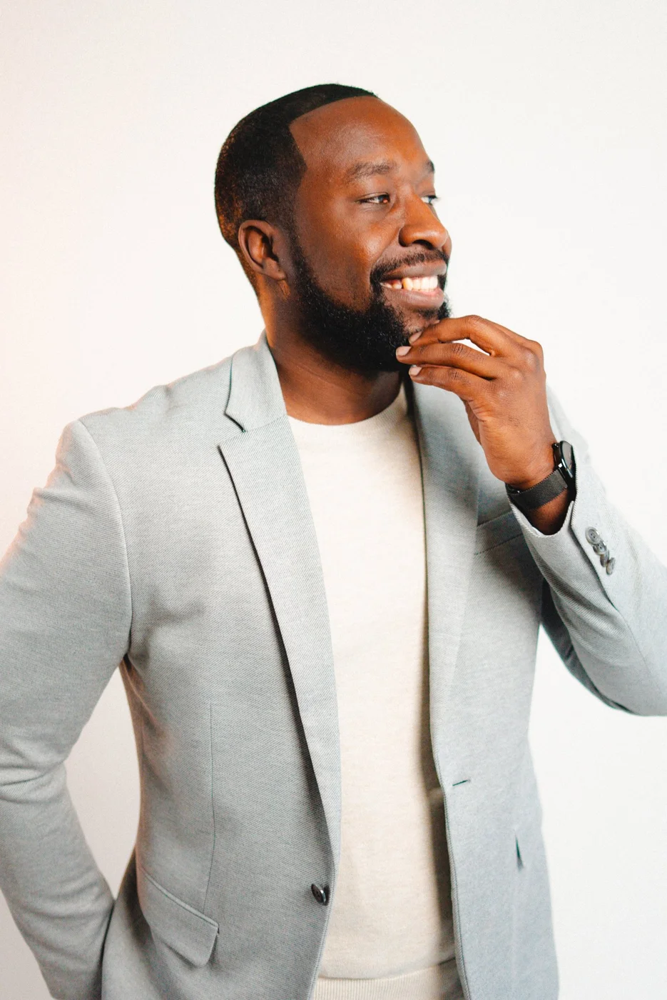

NASHVILLENEWSDYCE MEDIA + LEVI ISMAILA modern local newsroom.Nashville News is a local, independent media company led by NC5 Investigative journalist Levi Ismail & Media Strategist, James Webb combining sharp journalism and creative storytelling to cover the city.EXPLORE NASHVILLE NEWS VIEW OUR SOCIALS